Current painted-work continuation
REVIEW_V8:20 native originals,34 existing neutral displays and14 whole-canvas derivatives directly inspected. Seven painted-work derivatives join the four existing geode bindings at separate runtime paths. All46 current native game states directly reviewed; room2.8/contact2.7/clearing3.9 remain priorities. No full action/device/child/owner acceptance.
Every current game state and weak item · Current individual source review · Every native original
Soil attempt1

Source4.5 / cover4.0 rejected and unbound.
Soil attempt2

Source/material4.6; selected derivative bound. Clearing edge3.9 remains weak.
Painted geology rebuild and embedded-crystal correction
Current18 source originals — new opening states
All18 ImageGen originals/34 neutral displays/13 whole-canvas derivatives directly inspected. Earlier rejected vectors/empty geode remain preserved. New first crack and oblique middle opening keep crystal growths inside the rock; source4.6. Full static sequence4.5 provisional, endpoint support4.2/remote actor2.7/invitation3.8 still weak.
Current source scores · Every10 new native view
early crack — source4.6/5
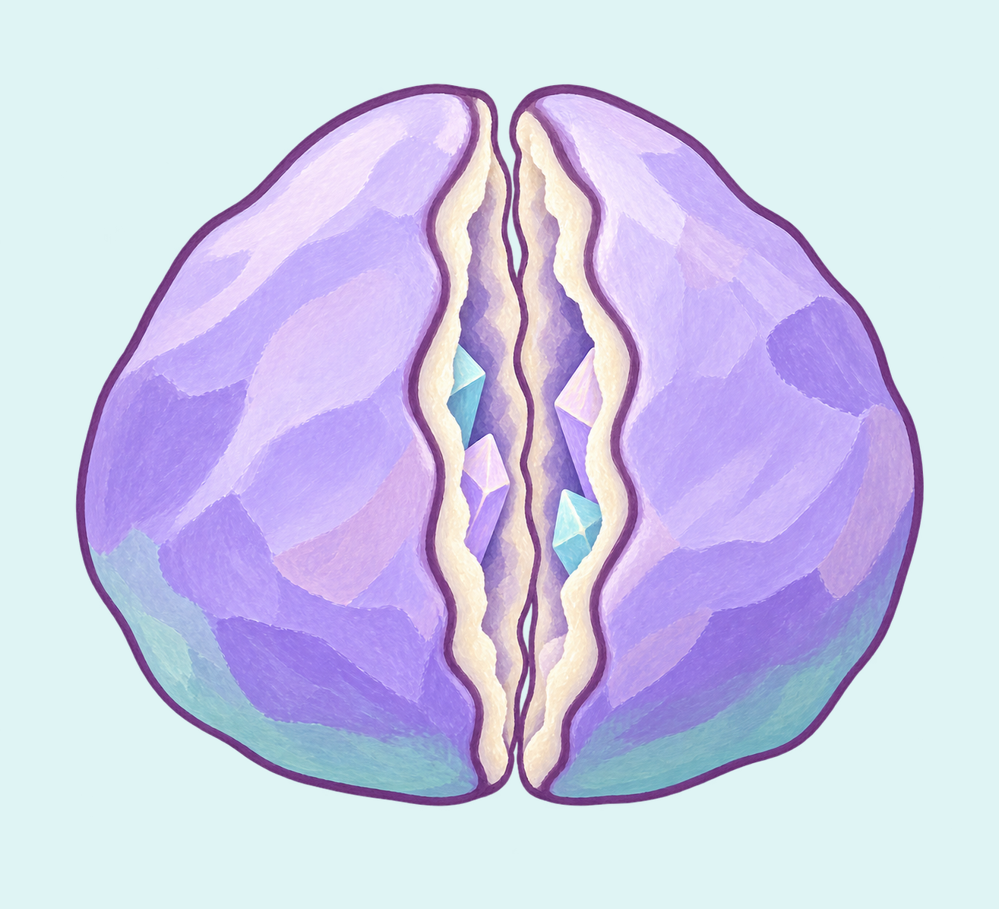
Compact lavender shell remains recognizable while a narrow cream-rimmed seam reveals only occluded cyan/lilac tips. Outer volume dominates; four visible tip portions do not mean the two hidden crystals were lost. Broad plum contours and lavender/aqua paint match the closed/full endpoints4.6. Width/height1.175 after alpha-footprint selection, versus closed1.074: opening silhouette grows rather than immediately exposing both full faces. True RGBA is clean on white/aqua; low-alpha trace specks are not baked background. Exact mounted continuity remains independent.
Exact prompt · Native/reference hashesmiddle open — source4.6/5
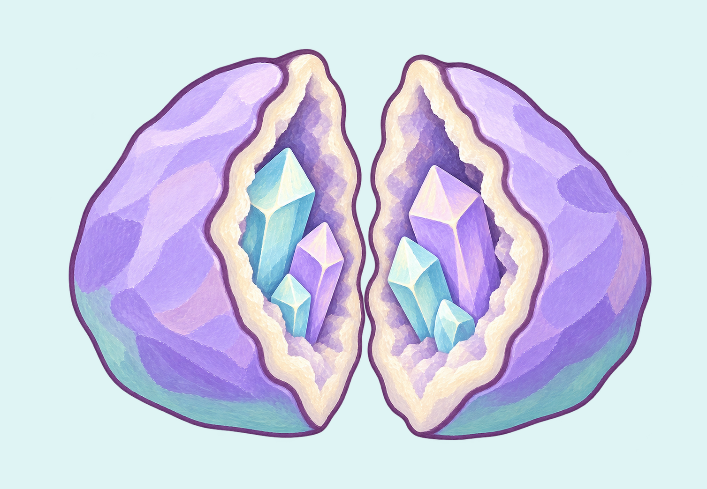
Both concave interiors are partly turned toward the viewer, leaving a substantial lavender outer side visible. Three joined crystals in each half retain the endpoint colour/order: tall cyan/lilac/small cyan left, tall lilac/medium cyan/small cyan right. No loose reward sprite, fall or loot semantics. Matte broad painted values and thick cream rim remain4.6. Alpha-footprint aspect1.485 is between the first-crack1.175 and full pair; native full sculpture is preserved. Static source score is not full opening/hand contact approval.
Exact prompt · Native/reference hashes14 native ImageGen originals,26 neutral alpha displays and9 whole-canvas technical derivatives directly inspected. Every attempt is preserved. Empty geode interiors are owner-rejected; the new source scores4.6.
Geode opening:48 native comparisons · All78 painted geology contexts · All76 earlier teacher/geology comparisons
The room is1672x941 and fails2048x2048 native coverage; source-only reference. Source finish, object fit and complete actions have separate scores. Weak contact, fossil masking/assembly, pan material and all-job review remain open.
Current written source reviews · Preserved earlier source opinions · Owner correction
GEO-PAINT-FOSSIL-01 — 4.3/5
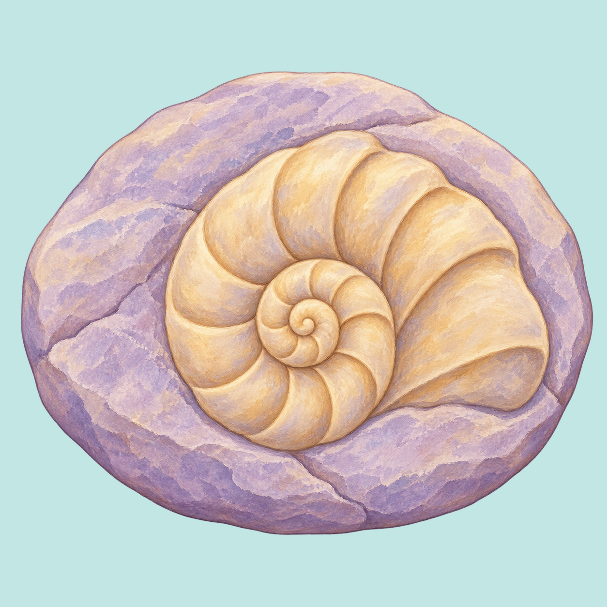
Fine mottled mineral texture and thin contour are too specimen-like for the broad painted toy language. Opaque slab is complete but has only43/28px side margins; earlier edge-touch warning came from low-opacity trace alpha, not a cropped opaque fossil. Kept as first draft.
REJECTED_UNBOUND_SOURCE · source-only drafting opinion
bd5c1399aa4b8573fbd36778a0f964e759b0dd866aaf1b204186d6067c47e47cGEO-PAINT-FOSSIL-02 — 4.6/5
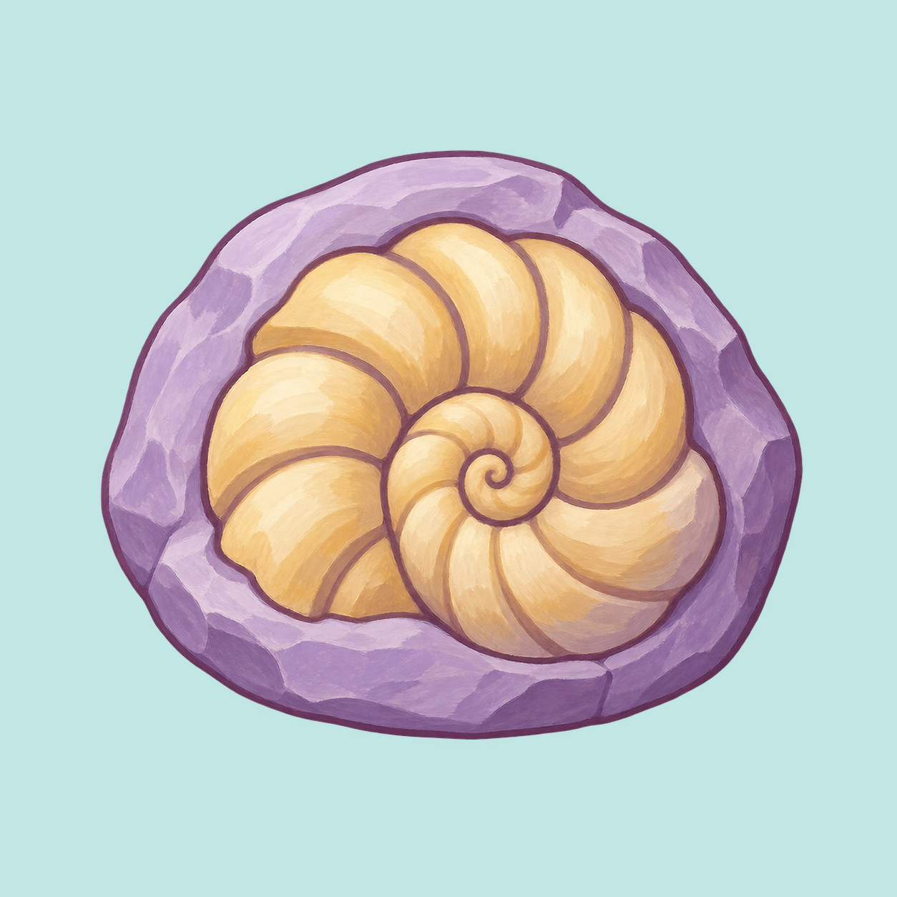
Strong plum contour, one warm readable spiral and broad brushed cream/lavender values now read as a painted picture-book object. Full opaque silhouette remains inside the canvas. Existing work-grid cover, source stretching, assembly thirds and actor contact require independent gameplay review.
SELECTED_SOURCE_ONLY_UNBOUND · source-only drafting opinion
2ccf249527c919e2bc16de916f91bfb5d790f4404611df3397948e3ec713860cGEO-PAINT-LAYERED_ROCK-01 — 4.6/5
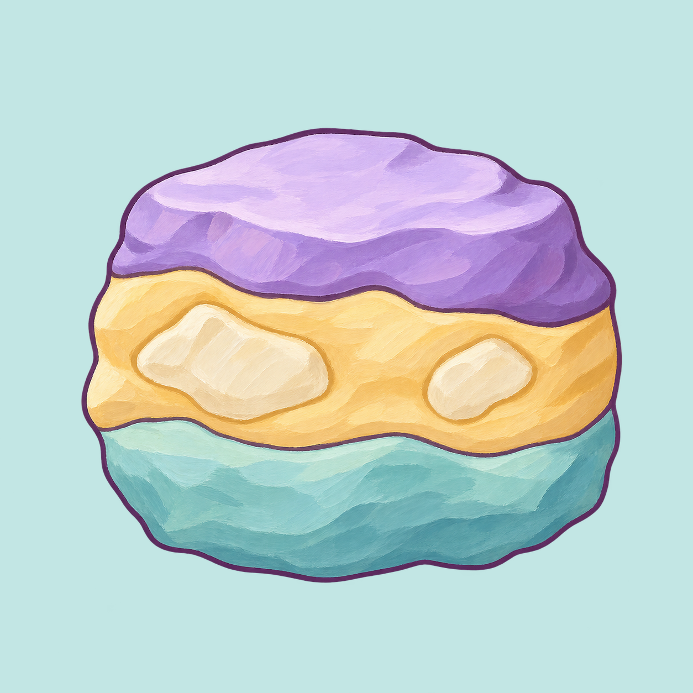
Exactly three large colored strata and two calm inclusions retain teaching clarity while broad gouache values and a rounded plum silhouette supply the missing painted material. This specimen must not serve as a semantic substitute for a washing-pan invitation.
SELECTED_SOURCE_ONLY_UNBOUND · source-only drafting opinion
263e088cf0714232bd8e43901c3c831682f06d12fb9c1c5436c4c81b963ed858GEO-PAINT-WASHING_PAN-01 — 4.5/5
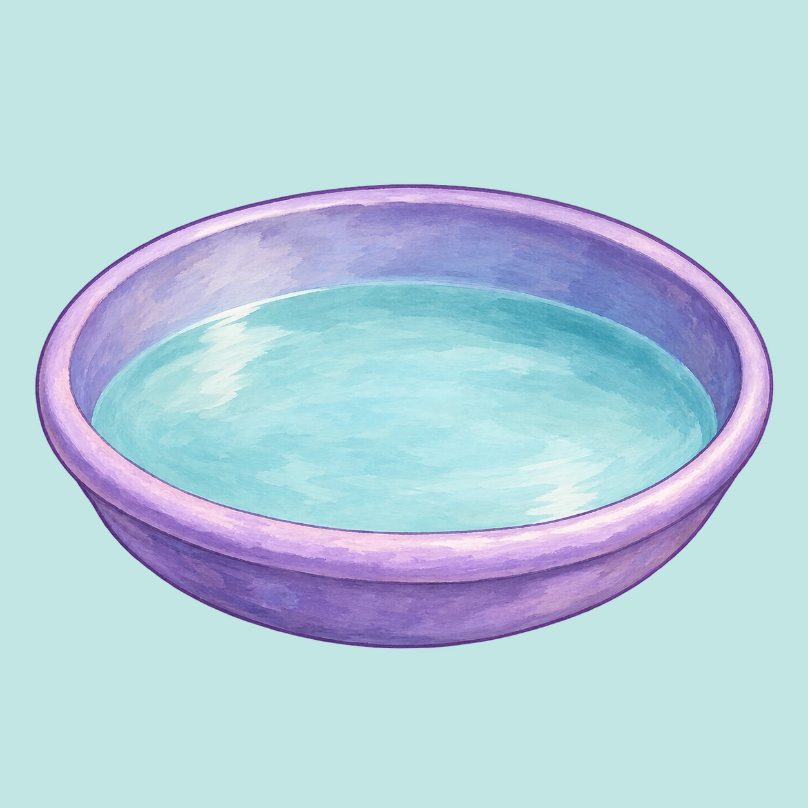
Aqua interior is generous and unobstructed, lavender rim has painted depth, and the whole bowl is readable. Fine water/material texture and relatively light contour remain less cohesive than the strongest new props;4.5 remains an inclusive refinement priority. Touch-grain containment and actual panning are unreviewed.
SOURCE_FLOOR_UNBOUND_PRIORITY · source-only drafting opinion
b49a89102df90c53e9f519a4409963b8548a323f9588586e27eee718ad184874GEO-PAINT-CLOSED_GEODE-01 — 4.6/5
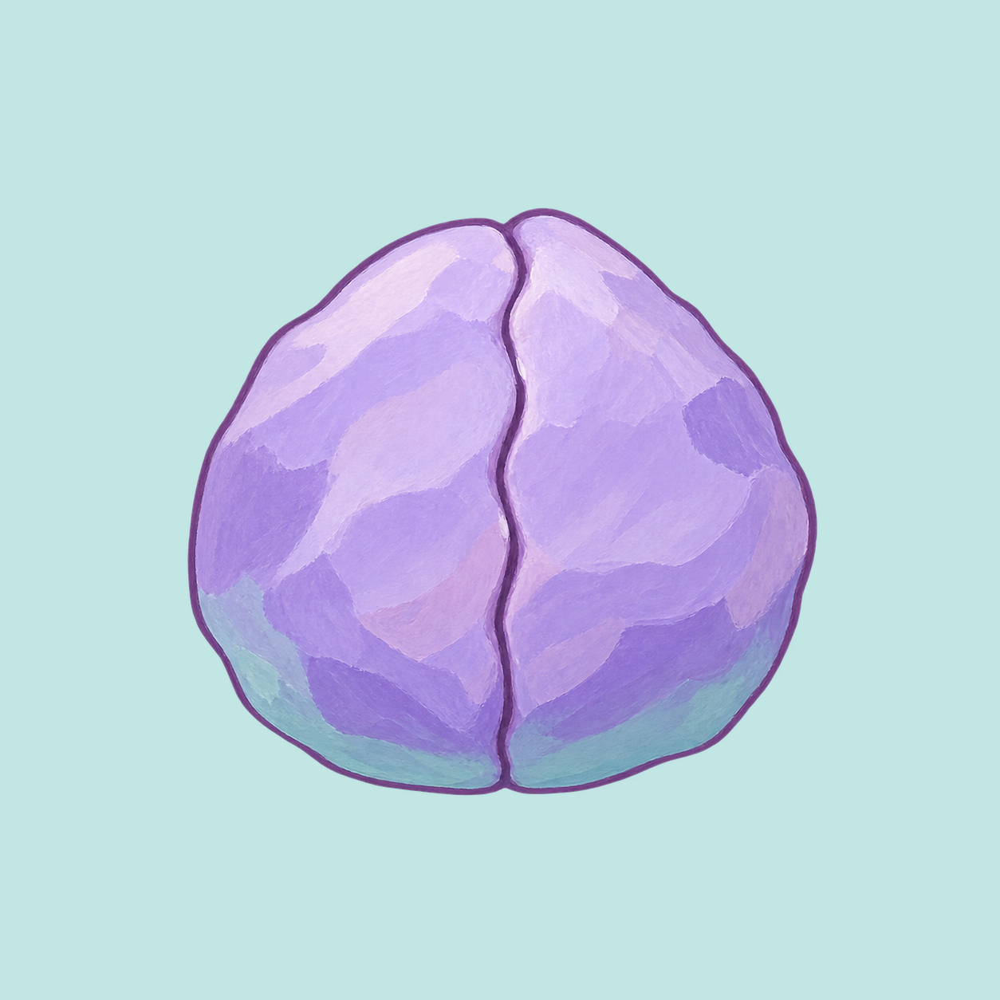
Simple rounded lilac body, aqua underside and a single readable central seam carry broad matte painted values. No tiny facets or visible interior. Source passes the drafting floor; seam cue alignment and matching opening action remain separate.
SELECTED_SOURCE_ONLY_UNBOUND · source-only drafting opinion
a4132fbdbcf8a05a32b681d4c1595ca22c470a9910013ccff47264d134b846f3GEO-PAINT-CRYSTAL_REWARD-01 — 4.6/5
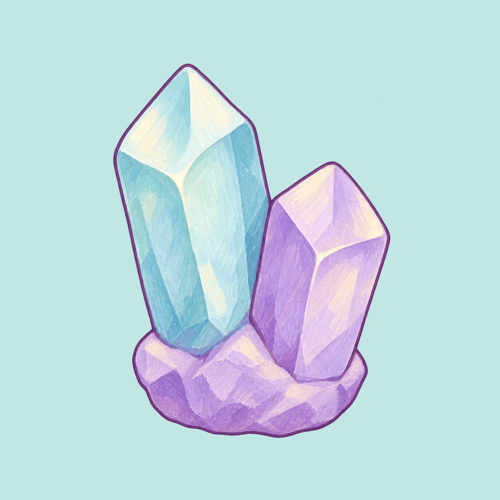
Exactly two distinct aqua/lavender crystals on one attached mineral base, broad painted facets and clear plum silhouette. Color and light fit the new prop family without dense realistic glitter. Actual reward visibility and crest-size use still need review. Owner correction: excluded from the geode reveal. May inform crystal color/material or a separately audited badge only; never a loose reward layer in the opening.
SELECTED_SOURCE_ONLY_UNBOUND · source-only drafting opinion
af4f70a8b6b14a266b685a500bc840977ac9884bf9a6f922fe918f25bf5b4ef4GEO-PAINT-OPEN_GEODE-01 — 3.0/5
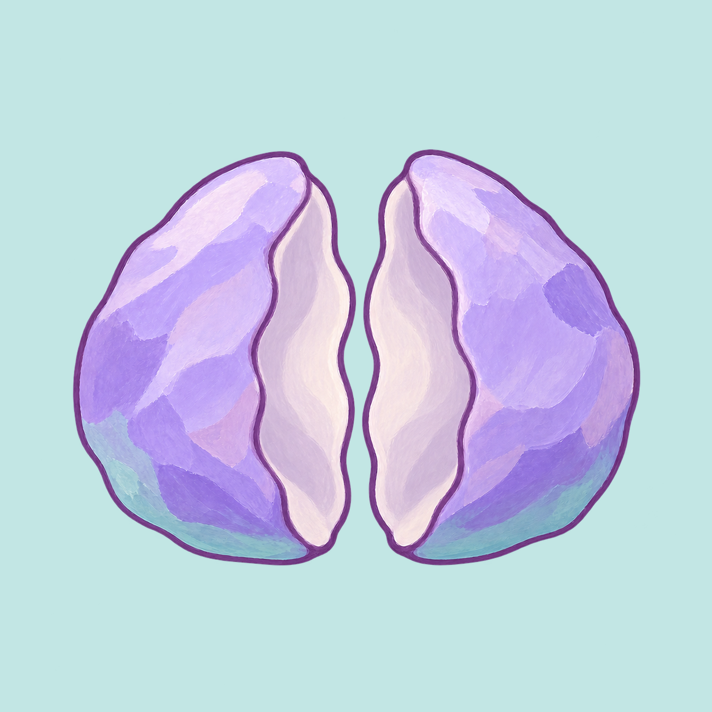
Owner correction withdraws the earlier finish-only4.6 as a current acceptance claim: empty cream halves and a separate crystal reward do not show crystals embedded in the geode. Original native and dated source review remain unchanged. Current semantic3.0; replaced by attempt02.
OWNER_REJECTED_EMPTY_INTERIOR · source-only drafting opinion
3830fceb98600491706da5d7cf25c897809b0b3ff4687f519af82089148f1612GEO-PAINT-WORK_SURFACE-01 — 4.4/5
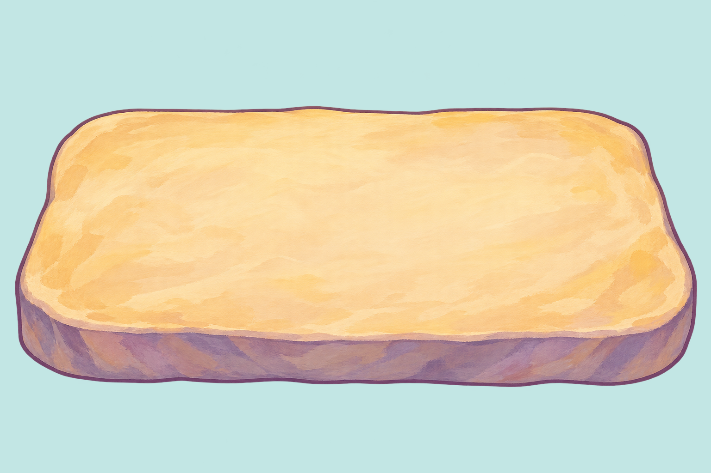
Warm painted slab is complete and physically readable, but fine contour and busy uneven edge values weaken the quiet work surface. Initial apparent halo rejection is corrected: native alpha/white/aqua display shows mostly trace-opacity surrounding color, not a solid baked backdrop. Preserve both the initial judgment and this measured correction.
EARLIER_UNSELECTED_SOURCE · source-only drafting opinion
e45a2e5e99cb51a51f364ebb7e29107645adab2a10a7b1fa26cf721f2b22602dGEO-PAINT-WORK_SURFACE-02 — 4.5/5
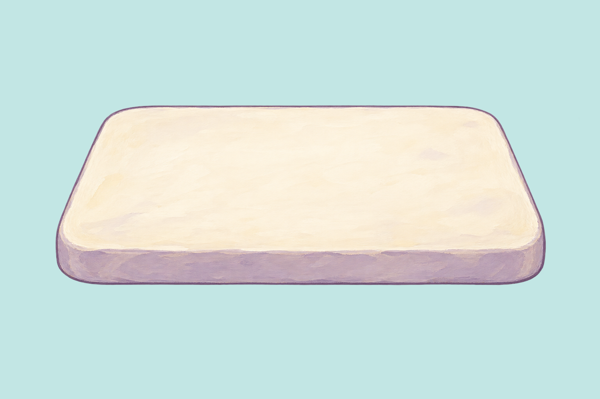
Quiet light center and slender lavender thickness are useful, but the very broad footprint and pale outer contour are weaker than attempt4. Native white/aqua composites show the apparent glow is trace-opacity color. Source-only4.5 does not approve a work-grid fit.
EARLIER_SOURCE_FLOOR_UNSELECTED · source-only drafting opinion
090ae565058777f0eaf3ccea59961aeb1cebed187da4129d72d75f52715c8010GEO-PAINT-WORK_SURFACE-03 — 4.5/5
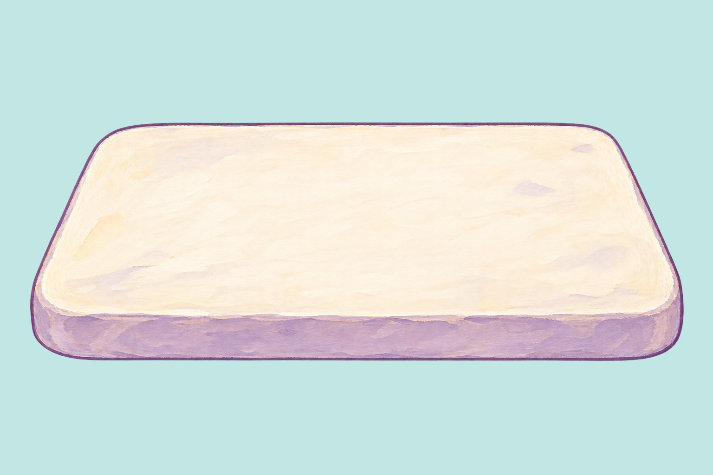
ImageGen background-removal request kept a faint native color field; measured alpha and neutral displays clarify that the field is trace opacity. Slab has a usable painted center, though its wide shape and fine contour are less robust. No source pixels were manually masked or repaired.
EARLIER_SOURCE_FLOOR_UNSELECTED · source-only drafting opinion
e0d81225d290b4fea0f7a254eb132383df884e395eea645ebbeef70d4ab218acGEO-PAINT-WORK_SURFACE-04 — 4.6/5
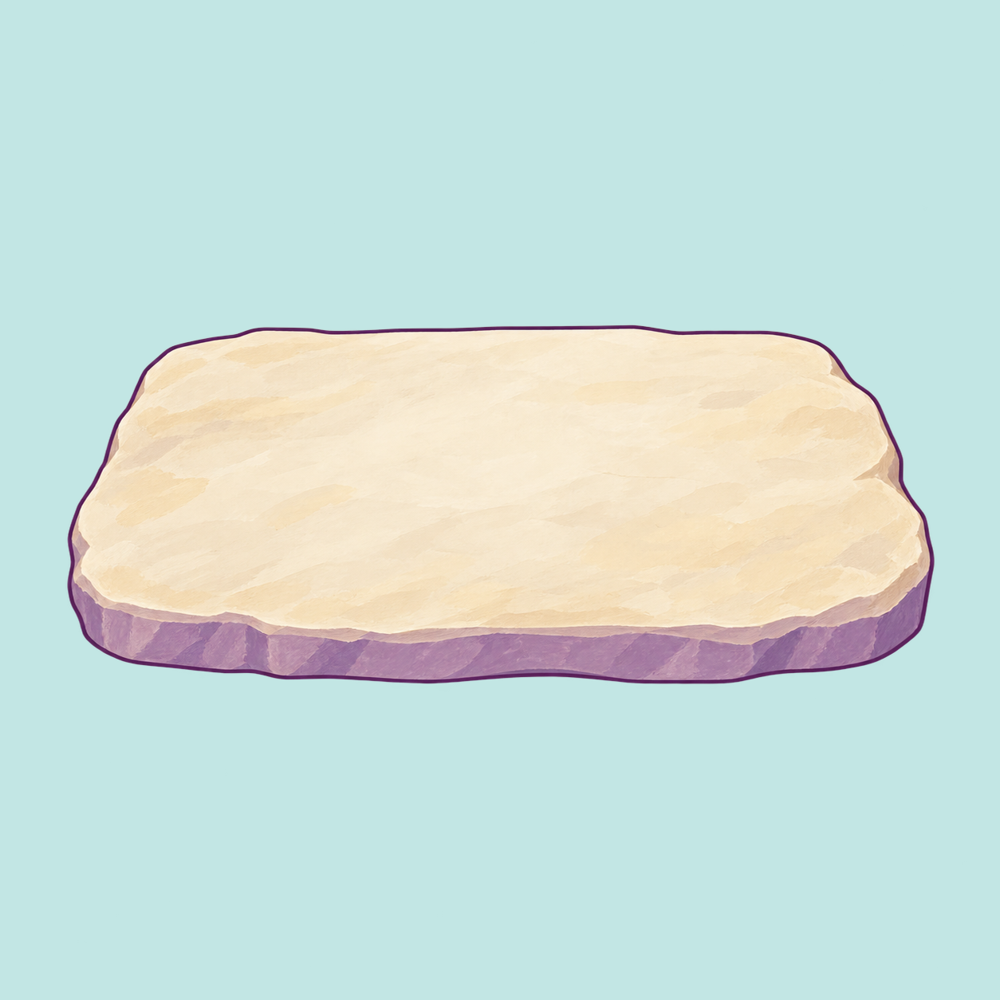
Varied plum silhouette, creamy quiet top and grouped lavender thickness supply a clear painted working prop. White/aqua native checks show a clean readable edge. Wide object footprint must be matched to the actual work rectangle without obscuring touch or reward pixels.
SELECTED_SOURCE_ONLY_UNBOUND · source-only drafting opinion
ebc95cfab2e0169ce08f93fe2c0679c74cee57237f9ac4c7e1933c27906e5b3aGEO-PAINT-GROTTO-01 — 4.6/5
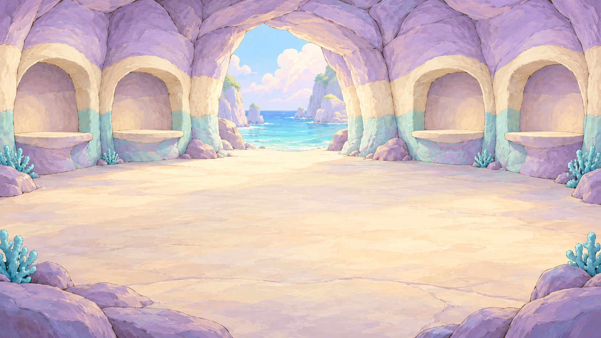
A welcoming high-key painted room with four empty edge alcoves, three broad strata and a quiet open floor resolves the flat procedural visual direction. Actual native1672x941 falls below2048x2048 per-screen coverage despite the requested3840x2160. This source is a layout/style reference only, never a runtime-resolution pass.
REFERENCE_ONLY_NATIVE_RESOLUTION_FAILED · source-only drafting opinion
ebc2ea1ab64173dd678ec43bbc0a0daedc4e1548b26dc6d096038bad0ea3f545GEO-PAINT-OPEN_GEODE-02 — 4.6/5
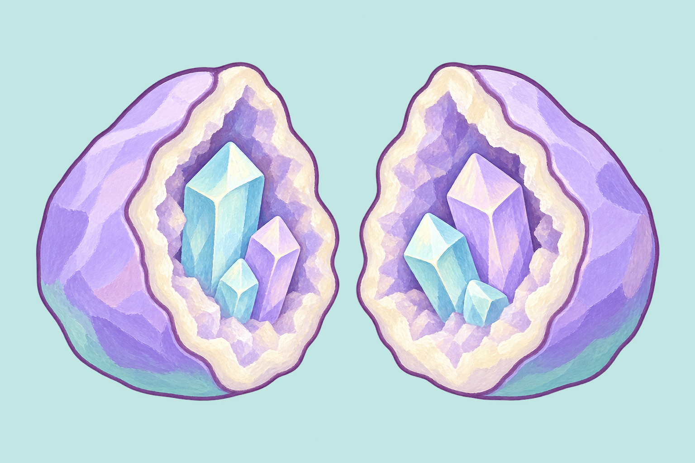
Two rounded mineral halves have clear concave purple cavities enclosed by a cream rim. Three large aqua/lavender crystals in each half have roots visibly buried in the lining; none floats in the gap or detaches as loot. Broad matte paint, plum contours and aqua underside preserve the closed geode material family. Both halves and generous transparent margins are complete. Closed-to-open apparent width and actor contact remain independent action priorities.
SELECTED_SOURCE_ONLY_EMBEDDED_INTERIOR · source-only drafting opinion
1191313bc32098ef4c1acede1c2bf547448b6a57a32905e7324e87bc092d87d8GEO-PAINT-WASHING_PAN-02 —4.6/5 source
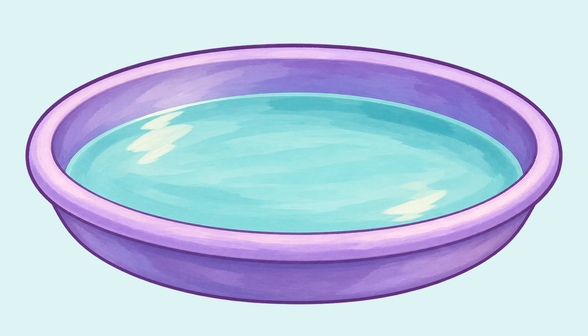
Confident warm-plum outer and inner contours, broad matte lavender bands and calmer aqua water improve the prior fine-textured pan. Cream reflections are grouped and the shallow attached sidewall remains readable. Full opaque silhouette is complete with margins. Measured opaque width1517/height737 gives2.06 aspect, not the requested1.75: preserve actual aspect when mounting. Native invitation squashing, rim/grain containment, flat mineral payoff and connected hands remain below target.
Every18 new native pan context and individual score